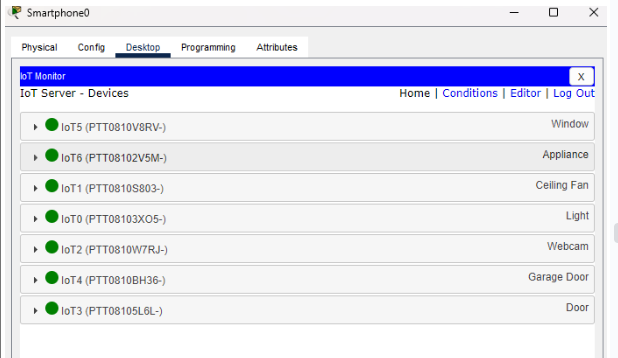

Descripción
Con el desarrollo de este proyecto se buscó poner en práctica todos los conceptos aprendidos en la asignatura con respecto a la construcción y configuración de redes de área basadas en tecnologías LAN y WLAN interconectadas en una sala emulada en Cisco Packet Tracer. Además de configurar servicios relacionados con la navegación en HTTP y TCP, gestión dinámica de direcciones ip usando DHCP, uso de dominios basados en DNS y análisis del flujo de datos de los diferentes servicios sobre toda la red.
Resumen
En este proyecto se desarrolló la configuración de tres redes distintas. Una red con servidores, una llamada campus con dispositivos inteligentes conectados mediante un protocolo PVRST y 802.1Q trunking en sus respectivas LANs, y una red llamada Mi casa inteligente conectada a una nube que se compone de distintos dispositivos domésticos inteligentes gestionados en una interfaz gráfica. Estas tres redes fueron interconectadas por un router ISP en común. Se usaron 4 espacios de direccionamiento las las redes campus, servidores, mi casa inteligente y la red de área amplia. Estos se dividieron en las VLANs necesarias usando subneteo. Además, se realizó la conexión entre los PCs de Campus y un servidor usando scripts basados en socket TCP.
Elementos de red usados en la simulación
| Elemento | Descripción |
|---|---|
| Dispositivos Inteligentes | Aparatos electrónicos que pueden conectarse, compartir información e interactuar con los usuarios y con otros dispositivos inteligentes, mediante una red LAN. En este laboratorio se simulo una PC, dos laptops y un smartphone |
| Router | Es un hardware el cual a diferencia del módem permite la conexión de uno o más dispositivos a una red local la cual está a su vez obtiene acceso al internet y estos pueden gestionar el tráfico de la información transmitida entre los dispositivos que se encuentren conectados a la red local los cuales estarán asignados con una dirección ip la cual es diferente en cada dispositivo conectado, hablando de la información transmitida por este dispositivo, este proceso del paso de la información se realiza por paquetes de datos los cuales cuentan con sus secciones/capas de las cuales se pueden identificar: el emisor, tipo de información, y hacia dónde se dirige esta información. Estos son los más utilizados en las empresas hoy en día debido a que permiten una conexión práctica con varios dispositivos de empleados a la vez que se puede gestionar su propia seguridad con el uso de software protegiendo de posible malware y sitios web no deseados para una red local de hogar o compañía. |
| Switch | Consisten en puntos de acceso a red que se conectan a dispositivos los cuales pueden tener conexión de tipo cable o inalámbrica y se permite el intercambio de información entre varios dispositivos entre sí. |
| VLAN | Consiste en un conjunto de dispositivos, computadoras o LAN los cuales son organizados de tal forma que solo haya un dominio de difusión. |
| LAN | Este apartado ya consiste en un grupo aparte de puertos de conexiones disponibles los cuales pueden favorecer a un único dispositivo o varios. |
| Subnetting | El Subnetting consiste en subdividir una gran red IP en varias redes lógicas, de forma que cada una de estas subnets funcionen como una red individual aunque sigan perteneciendo a una misma red principal y a un mismo dominio. |
| IoT dispositivos | Dispositivos informáticos no estándar que se conectan de forma inalámbrica a una red y tienen la capacidad de transmitir datos. |
| Servidor | Consiste en un ordenador o cpu física el cual siempre ha de mantenerse encendido para proporcionar su servicio el cual tiene como función, el transmitir la información a otros dispositivos que estén conectados al mismo servidor y entre los datos que se pueden transmitir mediante estos servidores se encuentran: bases de datos, archivos de texto, fotos/imágenes, archivos de video, audios, etc. |
| Nube | Esta hace referencia a servidores los cuales se acceden por medio de un dispositivo con capacidad de conexión a internet y con esto el usuario obtendrá acceso a bases de datos que están ligadas a estos mismos servidores. Los servidores pertenecientes a la nube se encuentran guardados en otras bases de datos de todo el planeta, gracias a esta función hogares, negocios, etc. pueden manejar sus servidores de red sin necesidad de algún hardware o software adicional en sus dispositivos. |
| Modem | Es un dispositivo con la capacidad de permitir la comunicación entre 1 dispositivo a la red de internet que convierte señales analogicas en digitales con el fin de permitir a dispositivos el acceso a la net, a la vez que el modem respecto a sus servicios funciona recibiendo la información del proveedor de servicios de internet a través del elemento cable coaxial, luego se hace el proceso de la conversión de señales correspondiente y realizar el proceso de intercambio de información correspondiente. |
Montaje y configuración
Teniendo en cuenta la instrucciones del proyecto se realizó la siguiente topología
1.Configuración básica de los switches y router:
Se accedió a cada switch y al router mediante la interfaz de línea de comandos (CLI) y se configuraron las contraseñas para acceder al modo de habilitación (enable) y al ingreso al switch. Esto se logró utilizando los comandos "enable password" y "line vty password".
Se crearon las VLAN y se asignaron las redes respectivas para cada departamento en cada switch. Por ejemplo:
En el switch 1:
VLAN 20: Estudiantes - Red: 128.17.5.0/22
VLAN 35: Biblioteca - Red: 128.17.35.0/22
En el switch 2:
VLAN 40: Profesores - Red: 128.17.9.0/22
VLAN 55: Servicio técnico - Red: 128.17.13.0/24
VLAN 99: Nativa - Red: 128.17.0.0/24
2.Configuración de enlaces troncales:
Se identificaron los puertos de los switches que se conectarán entre sí para permitir el paso de información de cada VLAN. Estos puertos se configuraron como troncales para asegurar la transmisión de datos entre los switches.
En cada switch, se utilizaron los comandos "interface [nombre del puerto]" y "switchport mode trunk" para configurar los puertos troncales.
3.Configuración de los puertos de los switches con PCs conectados:
Para cada puerto de switch que tenía una PC conectada, se configuró la VLAN correspondiente para que la PC recibiera la configuración de red adecuada.
Ejemplos de configuración:
En el switch 1, se configuraron los siguientes puertos para las siguientes VLAN:
VLAN 35: Biblioteca - PCs: PC_3, PC_7, PC_11
VLAN 20: Estudiantes - PCs: PC_2, PC_6, PC_10; Dispositivos inalámbricos: Wireless Host_Estudiante, Smartphone_Estudiante, Tablet_Estudiante
En el switch 2, se configuraron los siguientes puertos para las siguientes VLAN:
VLAN 40: Profesores - PCs: PC_1, PC_5, PC_9; Dispositivos inalámbricos: Wireless Host_Profesor
VLAN 55: Servicio técnico - PCs: PC_0, PC_4, PC_8; Dispositivos inalámbricos: Wireless Host_Técnico
4.Configuración del servidor DHCP:
Se configuró un servidor DHCP con la dirección IP 128.17.0.100/24.
En el router, se utilizó el comando "ip dhcp pool" para crear un grupo de direcciones IP disponibles para cada VLAN. Por ejemplo:
VLAN 35: Biblioteca - Rango de direcciones: 128.17.35.1/22
VLAN 20: Estudiantes - Rango de direcciones: 128.17.5.1/22
VLAN 40: Profesores - Rango de direcciones: 128.17.9.1/22
VLAN 55: Servicio técnico - Rango de direcciones: 128.17.13.1/24
En el router, se utilizó el comando "ip helper-address" en la interfaz correspondiente a cada VLAN para redirigir las solicitudes de DHCP al servidor DHCP.
5. Configuración del WLC (Wireless LAN Controller) y LAP (Lightweight Access Point):
Se conectó un computador a la misma red que el WLC utilizando la dirección IP asignada 128.17.0.10/24.
Se accedió a una página web desde el computador para configurar el LAP a través de la dirección IP del WLC.
Dentro de la página de configuración del LAP, se crearon diferentes WLANs y se les asignaron las VLAN correspondientes.
Se crearon las siguientes WLANs con sus respectivas contraseñas y asignaciones de VLAN:
Biblioteca - VLAN 35
Profesores - VLAN 40
Estudiantes - VLAN 20
Servicio técnico - VLAN 55
Se configuró un servidor DHCP interno en el router para que el LAP se conectará a él y obtuviera la información necesaria para las redes inalámbricas.
Procedimiento para configuración de servidores:
Configuración de la red:
Servidor DNS:
Se asignó la dirección IP 209.175.57.2/29 al servidor DNS dentro de la subred 209.175.57.0/29. Esta dirección se configuró con una puerta de enlace de 209.175.57.1/29. La puerta de enlace se configuró en el router del ISP, específicamente en el puerto conectado al switch de la topología de los servidores. Esta configuración permite que el servidor DNS se comunique con otras redes y acceda a recursos externos, si es necesario.
Servidor web:
Se asignó la dirección IP 209.175.57.3/29 al servidor web dentro de la subred 209.175.57.0/29. Esta dirección también se configuró con la misma puerta de enlace 209.175.57.1/29 que se asignó al servidor DNS. Esta configuración permite que el servidor web envíe y reciba datos dentro de la red y se comunique con otros dispositivos.
Conexión con el Router ISP:
La red del router ISP se configuró para establecer una conexión con el router de la topología de campus y con la nube, lo que permite el acceso también a la topología de "mi casa inteligente" . Para habilitar esta conectividad, se estableció un enlace serial entre los routers.
Configuración de rutas:
Se utilizaron los siguientes comandos "ip route" para configurar las rutas necesarias en los routers, estas configuraciones de ruta permiten que las diferentes redes accedan a la red de los servidores, lo que garantiza la conectividad y la posibilidad de acceder a la página web personalizada.
Procedimiento para la red dentro de la topología general “mi casa inteligente”:
para esta configuración se tuvo en cuenta la dirección IP que se requería para esta red (192.168.7.0/24), configuramos el homegateway con dicha red y se le asignó una contraseña, conectamos cada dispositivo a la red y estos obtuvieron su ip por medio de “DHCP” que lo configura automáticamente el home gateway, para que cada dispositivo pueda acceder al servidor DNS para la página web personalizada, se configura en la pestaña “Internet” el DNS como la ip del servidor, entre otras configuracion con respecto al router ISP.
En las siguientes imágenes se muestra el acceso de los nodos terminales, tipo smartphone y laptop, a la interfaz gráfica de gestión de dispositivos de la casa inteligente.
Primero se configura los dispositivos con la misma SSID del home gateway para que tengan acceso a este. Con los demás dispositivos domésticos dentro sus configuraciones globales seleccionamos al Home Gateway como el IoT server. Luego solo entramos a la pestaña desktop de los dos dispositivos y entramos al apartado de IoT Monitor. Luego ingresamos 192.168.25.1 como el IoT server address y el username y la contraseña que en este caso las dos son “admin”. Así ingresamos a la interfaz gráfica de gestión de dispositivos. Desde aquí ya podemos activar y desactivar dispositivos como la puerta de garaje o la ventana.
Tabla de direccionamiento
Conexión cliente-servidor socket TCP
Dentro de la configuración de cada pc de la red campus en la pestaña de programming creamos un nuevo proyecto tipo TCP client lo que genera una plantilla que permite la conexión entre un cliente y un servidor. Establecemos un puerto, en este caso usamos el 1234 y cambiamos el serverIP como la verdadera dirección del servidor web, var serverIP = "209.175.57.3". Luego incluimos el siguiente código para verificar la conexión: client.send(serverIP, serverPort, "Conectando"). Esto envía el mensaje “Conectando” al server al puerto asignado.
Luego creamos un proyecto tipo TCP server en la misma pestaña en el servidor web que ya incluye una función que apenas reciba data de un cliente imprime su dirección IP y el puerto de donde se envió. Primero se corre el código del servidor y luego del PC ya estos códigos envían el mensaje apenas se inicien
Esta fue la confirmación del mensaje recibido por el servidor web por parte del PC 3.
Retos y dificultades durante el desarrollo de los procedimientos:
Durante el montaje de la topología y las configuraciones para la red más fundamental para todos los dispositivos conectados resultó en las configuraciones de los dispositivos router de la topología de red debido a la amplitud de direcciones de tipo ip manejadas para la buena conexión de todos lo enlaces y de ahí pasamos a los procedimientos del método se subnetting(subneteo de redes y direcciones ip) el cual se tuvo en cuenta para obtener direcciones ip disponibles y realizar todos los enlaces posibles con los dispositivos cableados y de tipo wireless dentro de la misma red amplia campus y sus complejas conexiones hacia esta misma con las rutas de acceso de parte de los switches y este apartado tuvo ciertas complicaciones a la hora de la asignación de las direcciones ip para que existiese el buen funcionamiento de los servidores.
Conclusiones del proyecto:
Para empezar, a partir de este proyecto pudimos observar una buena aplicación de todos los conceptos de las capas de red a lo largo de todo el semestre, el objetivo de este laboratorio se cumplió correctamente, pudimos hacer todos los procedimientos, algunos con más dificultades que los otros pero resultó bien.
La configuración del servidor DNS y el servidor web se llevó a cabo siguiendo los pasos descritos anteriormente. Se asignaron direcciones IP específicas a cada servidor dentro de la subred 209.175.57.0/29, junto con una puerta de enlace compartida de 209.175.57.1/29. Además, se configuraron las rutas necesarias en los routers para permitir el acceso a los servidores desde diferentes redes. Estas configuraciones permiten que la página web personalizada sea accesible desde cualquier dispositivo conectado a las tipologías correspondientes, las configuraciones de la red campus, es algo muy parecido a lo que se realizó en el laboratorio pasado, algo nuevo era el servidor DHCP y los dispositivos de Wireless Lan Controller y Light Acces Point, que se configuraron siguiendo una serie de pasos para lograr el objetivo que era darles el acceso a la red a dispositivos wireless y la red de la casa es algo que también nos tocó investigar sobre eso, más que todo en como configurar el home gateway. De esta manera logramos construir 2 redes distintas una que simula la universidad y otra que simula una casa inteligente con dispositivos “IoT”, que pueden acceder a una página web creada por nosotros que se encuentra alojada en unos servidores con una red distinta.